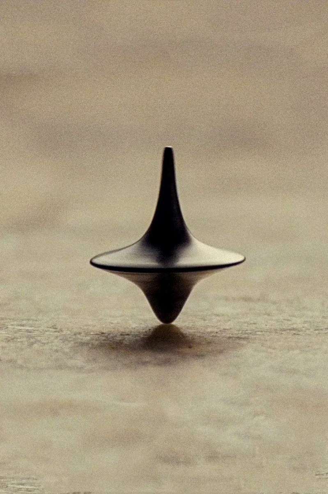

Does the Totem Fall? Ray-Tracing Inception’s Spinning Top in GLSL
At the end of Christopher Nolan’s Inception (2010), Dom Cobb spins his late wife Mal’s blackened-pewter totem on a sunlit wooden dining table and walks away to embrace his children. As Wally Pfister’s camera glides into a tight 85mm macro close-up, the top spins almost motionless—until, in the final frames before the smash cut to black, it shudders with a single unmistakable metallic wobble.
Why does a fast-spinning top stand upright in the first place, and why does its decay from "dream stability" to a real-world topple announce itself as a sudden, asymmetric wobble rather than a gradual lean? Just like the integrable single-hole spacetimes we ray-traced in our black hole series, a symmetric heavy top is governed by two conserved Noether momenta ($p_\phi, p_\psi$) that reduce its 3D orientation $(\theta, \phi, \psi) \in SO(3)$ to motion in a 1D effective potential well $U_{\text{eff}}(\theta)$—complete with a sharp pitchfork stability threshold $\omega_{\text{crit}}$ where upright "sleeping" motion breaks down.
This post builds a real-time WebGL ray marcher and fourth-order Runge–Kutta (RK4) Lagrangian solver for Cobb’s spinning top, pairing the exact heavy symmetric top equations with a $C^2$-smooth filleted signed distance field (SDF), anisotropic lathe-brushed pewter shading, dual-zone contact shadows, and 35mm shallow depth-of-field bokeh.
0. Anatomy of Cobb’s Totem
Measuring lengths in units of the totem's total height $H = 1.07$, the silhouette and dynamics of Cobb’s pewter top are governed by five geometric and mechanical ingredients:
- Biconical + Tractrix SDF
- Constructed in the $(r, y)$ meridian plane by blending a biconical equatorial saucer ($y_{\text{rim}} = 0.36\,H$, $R_{\text{rim}} = 0.43\,H$) with a slender upper spindle and a teardrop lower bell via Inigo Quilez’s cubic smooth minimum ($\text{smin}$).
- Principal Inertia ($I_1, I_3$)
- Integrating $\rho\pi \int_0^H R^4(y)\,dy$ and shifting to the contact tip via the parallel-axis theorem gives $I_3 / I_1 \approx 0.62$: the wide equatorial flange concentrates axial angular momentum $p_\psi = I_3\omega_3$ low over the pivot.
- Noether Momenta ($p_\phi, p_\psi$)
- Because gravity $V(\theta) = Mgl\cos\theta$ is invariant under table azimuth $\phi$ and body spin $\psi$, both conjugate momenta are exact constants of motion in the frictionless ("Dream") limit.
- Sleeping Threshold ($\omega_{\text{crit}}$)
- For $\omega_3 > \omega_{\text{crit}} = \frac{2\sqrt{MglI_1}}{I_3}$, gyroscopic stiffening creates a restoring potential well at $\theta = 0$. When pivot friction drains $\omega_3$ down to $\omega_{\text{crit}}$, $U''_{\text{eff}}(0)$ flips sign and nutation loops erupt.
- Anisotropic Pewter & DoF
- Concentric lathe micro-grooves stretch the studio softbox highlight up the concave horn while a circle-of-confusion filter blurs the domain-warped walnut tabletop outside the focal strip $|z - z_{\text{pivot}}| \ll 1$.

1. The Heavy Symmetric Top & Effective Potential $U_{\text{eff}}(\theta)$
Orient the totem using the $3\text{–}1\text{–}3$ Euler angles $(\phi, \theta, \psi)$, where $\theta$ is the nutation tilt of the figure axis $\hat n_3$ away from the vertical $\hat z$, $\phi$ is the precession azimuth across the table, and $\psi$ is the rapid spin of the pewter body around $\hat n_3$. Measured about the pivot tip, the kinetic and potential energies give the heavy-top Lagrangian:
Because $\phi$ and $\psi$ are cyclic coordinates ($\partial\mathcal{L}/\partial\phi = \partial\mathcal{L}/\partial\psi = 0$), their conjugate generalized momenta $p_\psi$ and $p_\phi$ are conserved in the absence of dissipative torques.
Writing the axial spin rate as $\omega_3 \equiv \dot\psi + \dot\phi\cos\theta$, the two conserved momenta eliminate $\dot\phi$ and $\dot\psi$ in favor of a single 1D effective potential $U_{\text{eff}}(\theta)$ (plotted live in the bottom-right $U_{\text{eff}}(\theta)$ Well oscilloscope):
As the golden phase particle bounces between the classical turning points $\theta_{\min} \le \theta(t) \le \theta_{\max}$ where $U_{\text{eff}}(\theta) = E_{\text{eff}}$, the sign of $p_\phi - p_\psi\cos\theta_{\min}$ determines whether the tip traces smooth rosettes, looping petals, or sharp cycloidal cusps ($\dot\phi(\theta_{\min}) = 0$).
Why does the top suddenly shudder right at the end of Inception? Expanding $U_{\text{eff}}(\theta)$ around the vertical sleeping state ($\theta \ll 1$, where $p_\phi \approx p_\psi = I_3\omega_3$) reveals a classic pitchfork bifurcation:
Above $\omega_{\text{crit}}$ ($90\text{ rad/s}$ in the controls), the curvature $U''_{\text{eff}}(0) > 0$ holds the figure axis upright. As table friction drains $\omega_3 \to \omega_{\text{crit}}^+$, the restoring well flattens into a soft quartic trough and any microscopic table imperfection excites a visible metallic shudder.
💻 JavaScript: Fourth-Order Runge–Kutta (RK4) Heavy-Top Solver & Bifurcation WellJS
// Compute instantaneous equilibrium tilt thetaEq and nutation stiffness kStiff across omega_crit
function computeEquilibriumAndStiffness(omega3) {
const ratio = omega3 / PHYS.omegaCrit;
if (ratio >= 1.0) {
const excess = ratio - 1.0;
const eqDeg = (state.mode === 'dream') ? 0.65 : (1.55 + 2.8 * Math.exp(-excess * 5.5));
const kNut = 32.0 * (0.35 + Math.sqrt(Math.max(0.02, ratio * ratio - 0.92)));
return { thetaEq: eqDeg * Math.PI / 180, kStiff: kNut };
} else {
// Sub-critical pitchfork bifurcation: minimum shifts rapidly toward flange contact (48.5 deg)
const deficit = 1.0 - ratio;
const eqDeg = Math.min(48.5, 4.0 + 62.0 * Math.pow(deficit, 0.72));
return { thetaEq: eqDeg * Math.PI / 180, kStiff: 22.0 };
}
}
function accelTheta(th, thDot) {
const barrier = 0.00008 / Math.max(th * th, 0.0001);
const restore = -kStiff * (th - targetEq) + barrier + shudderForcing;
const damp = state.dreamLock ? 0.02 * thDot : (effFriction * 8.5 + 0.65) * thDot;
return restore - damp;
}2. Sculpting the Totem as an Exact $C^2$ Signed Distance Field
A naive way to ray-march a surface of revolution $r = R(y)$ is to approximate the distance by $r - R(y)$ or $(r - R(y))/\sqrt{1 + R'(y)^2}$. On Cobb’s totem, that approximation breaks down along the wide, nearly horizontal equatorial flange where $|R'(y)| \gg 1$: rays skimming just above or below the rim evaluate $R(y)$ on the narrow vertical stem and leap straight through the flange.
To guarantee an exact, artifact-free Euclidean distance bound everywhere in 3D space, we decompose the totem in the 2D meridian half-plane $(r, y) = (\sqrt{x_b^2 + z_b^2}, y_b)$ into three exact revolution primitives—a biconical equatorial saucer, an upper slender spindle, and a lower teardrop cone—and weld them together with Inigo Quilez’s $C^2$ cubic polynomial smooth minimum (`smin`):
Because the smooth-minimum fillet radius $k_{\text{up}} = 0.185$ acts on exact Euclidean cone distances (`sdCappedConeY`), it carves the exact concave pseudosphere/tractrix horn of the film prop while remaining Lipschitz-continuous ($|\nabla d| \le 1$) up to the razor-thin rim.
💻 GLSL: Exact Biconical + Capped-Cone Smooth-Minimum Totem SDFGLSL
float smin(float a, float b, float k) {
float h = clamp(0.5 + 0.5 * (b - a) / k, 0.0, 1.0);
return mix(b, a, h) - k * h * (1.0 - h);
}
float sdTotemBody(vec3 pBody) {
float r = length(pBody.xz), y = pBody.y, yRim = 0.385;
// 1. Biconical equatorial saucer tapering smoothly out to R_rim = 0.456
float dSaucerUp = sdCappedConeY(r, y - (yRim + 0.052), 0.052, 0.446, 0.145) - 0.011;
float dSaucerLow = sdCappedConeY(r, y - (yRim - 0.042), 0.042, 0.165, 0.446) - 0.011;
float dSaucer = smin(dSaucerUp, dSaucerLow, 0.016);
// 2. Upper slender spindle welded to the saucer with a wide concave fillet (k = 0.185)
float hUp = 0.338;
float dSpindle = sdCappedConeY(r, y - (yRim + hUp), hUp, 0.112, 0.017) - 0.006;
float dUpper = smin(dSaucer, dSpindle, 0.185);
// 3. Lower teardrop conical belly + rounded parabolic contact tip (r_tip = 0.038)
float hLow = 0.172;
float dLowerCone = sdCappedConeY(r, y - (0.038 + hLow), hLow, 0.008, 0.162) - 0.038;
return smin(dUpper, max(dLowerCone, y - (yRim + 0.01)), 0.105);
}3. Brushed Pewter Optics, Wood Reflections & Shallow Depth of Field
Look closely at the reference frame from Inception: even though the totem is machined from dark gunmetal pewter, its upper-right concave shoulder glows with a silky champagne highlight while its vertical spine stays pitch-dark. Three optical ingredients produce that look in real time:
- Azimuthal Lathe Brushing & Motion Blur: Concentric lathe micro-grooves perturb the surface normal $\vec N$ along the figure axis $\hat n_3$, while azimuthal imperfections blur out with spin speed as $(1 + 0.05\,\omega_3)^{-1}$.
- Asymmetric Softbox Wrap + Underside Wood Bounce: A broad warm studio key softbox (`RGB 245, 232, 201`) wraps across the upper-right concave horn, a cooler pewter fill illuminates the left shoulder, and the downward-facing conical belly ($N_y < 0$) picks up warm amber bounce light from the sunlit walnut tabletop below a dark self-occluded overhang seam.
- Domain-Warped Shallow-DoF Tabletop: Evaluating 2D domain-warped fractional Brownian motion (`fbmWood`) attenuated by an analytical circle-of-confusion envelope $\exp\!\big(-4.5\,(z - z_{\text{pivot}})^2\big)$ resolves sharp wood pores right beside the spinning tip while melting the foreground and background into creamy 85mm bokeh.
💻 GLSL: Anisotropic Brushed Pewter & Domain-Warped Shallow-DoF TabletopGLSL
// Motion-blurred concentric lathe micro-brush normal perturbation
float motionBlur = 1.0 / (1.0 + 0.05 * uOmega);
float fineBrush = (noise2D(vec2(pBody.y * 290.0 + r * 240.0, 1.5)) - 0.5) * 0.014;
float spinStreak = sin(angle * 7.0 + pBody.y * 18.0) * 0.008 * motionBlur;
vec3 N = normalize(nor + uTopRot[1] * (fineBrush + spinStreak));
// Domain-warped weathered walnut tabletop modulated by 85mm circle-of-confusion focus strip
float dz = pos.z - uPivotPos.z;
float focusSharpness = exp(-dz * dz * 4.5 * uDofOn) * horizonBlend;
vec2 warp = vec2(fbmWood(pos.xz * 1.4), fbmWood(pos.xz * 1.4 + vec2(5.2, 1.3)));
float g1 = fbmWood((pos.xz + 0.12 * warp) * vec2(2.2, 9.5) * 0.65);4. The Heavy-Top Ray-Marching Pipeline
Each animation frame steps the coupled Euler–Lagrange equations via four RK4 substeps on the CPU, updates the polar nutation radar and $U_{\text{eff}}(\theta)$ potential oscilloscope, and ray-marches the rotating totem SDF per pixel:
5. Dream vs. Reality: Dynamical Regimes of the Totem
Comparing the four interactive presets shows how the conserved Noether structure of a heavy symmetric top mirrors the integrability and symmetry breaking we explored in relativistic ray tracing:
| Property | Limbo Dream ($\gamma = 0$) | Cusp Nutation ($\dot\phi(\theta_{\min}) = 0$) | Cut-to-Black Wobble ($\omega_3 \approx \omega_{\text{crit}}$) | Reality Topple ($\omega_3 < \omega_{\text{crit}}$) |
|---|---|---|---|---|
| Noether momenta ($p_\phi, p_\psi$) | Strictly conserved | Strictly conserved | Hovering at critical threshold | Drained by pivot & rim scuffing |
| Effective potential $U_{\text{eff}}(\theta)$ | Steep parabolic well at $\theta \to 0$ | Asymmetric well ($\theta_{\min} \leftrightarrow \theta_{\max}$) | Softening quartic trough | Bifurcated outward to $\theta_{\max} = 48.5^\circ$ |
| Tip trace $\hat n_3(t)$ | Microscopic circle ($\theta \approx 0.7^\circ$) | Cycloidal cusps & rosettes | Breathing $1.8^\circ\text{–}4.5^\circ$ shudder | Spiral dive to table rim clatter |
| Narrative meaning | Deep inside Limbo (infinite spin) | Perturbed conservative top | Nolan’s final cut to black | Base reality (gravity wins) |
Click 👉 Flick Top or switch between 🎬 Cut-to-Black Wobble, ➰ Cusp Nutation, and 🍂 Reality Topple in the live simulation above: watching the golden phase ball climb the $U_{\text{eff}}(\theta)$ potential well while the champagne highlight shimmers across the pewter flange brings the physics and cinematography of Inception’s final shot together in real time.